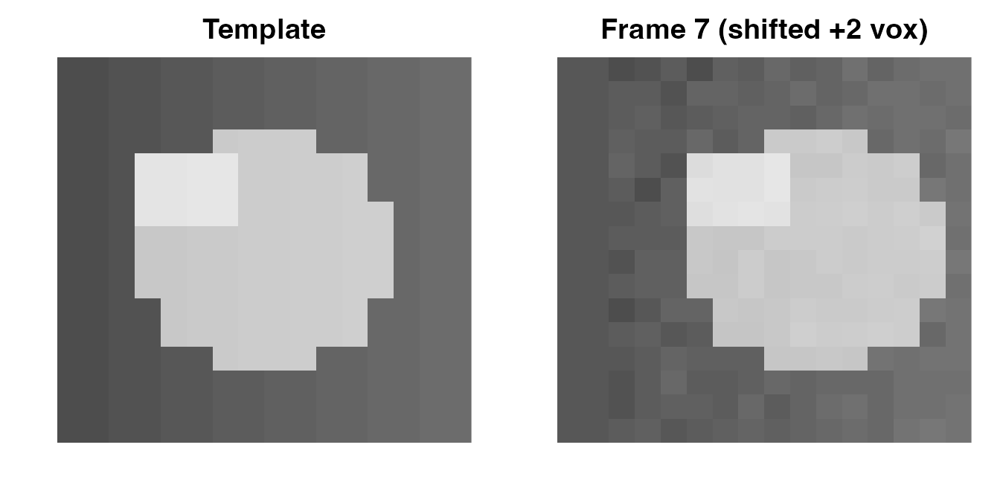
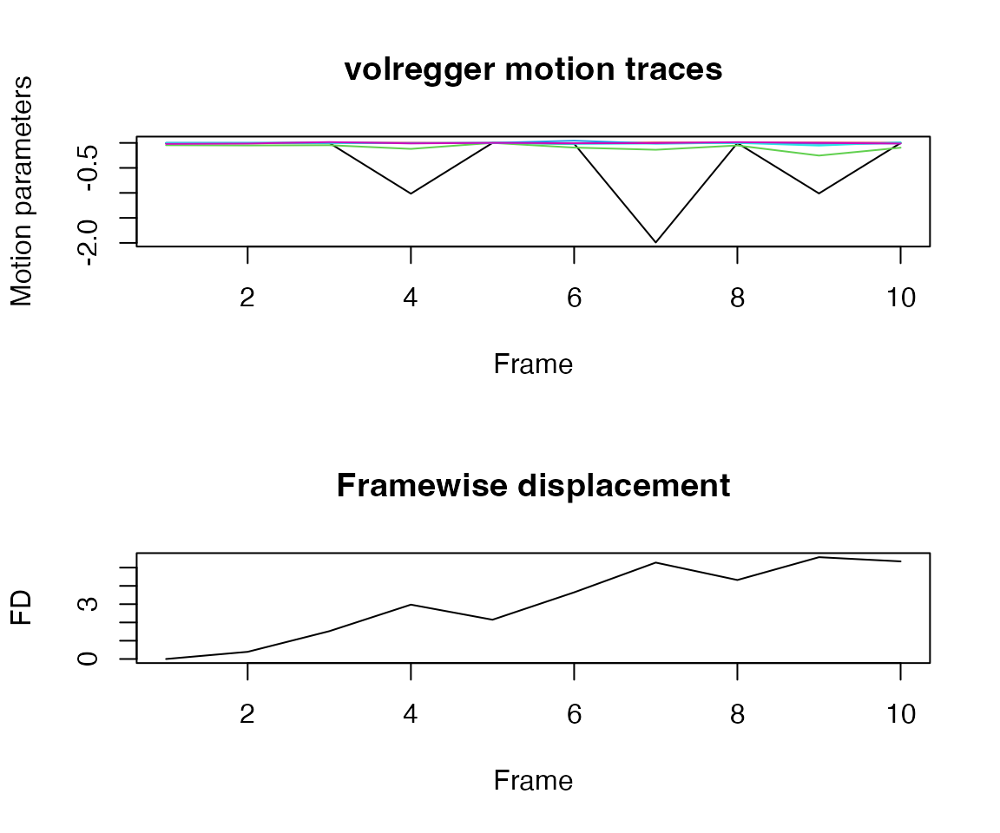
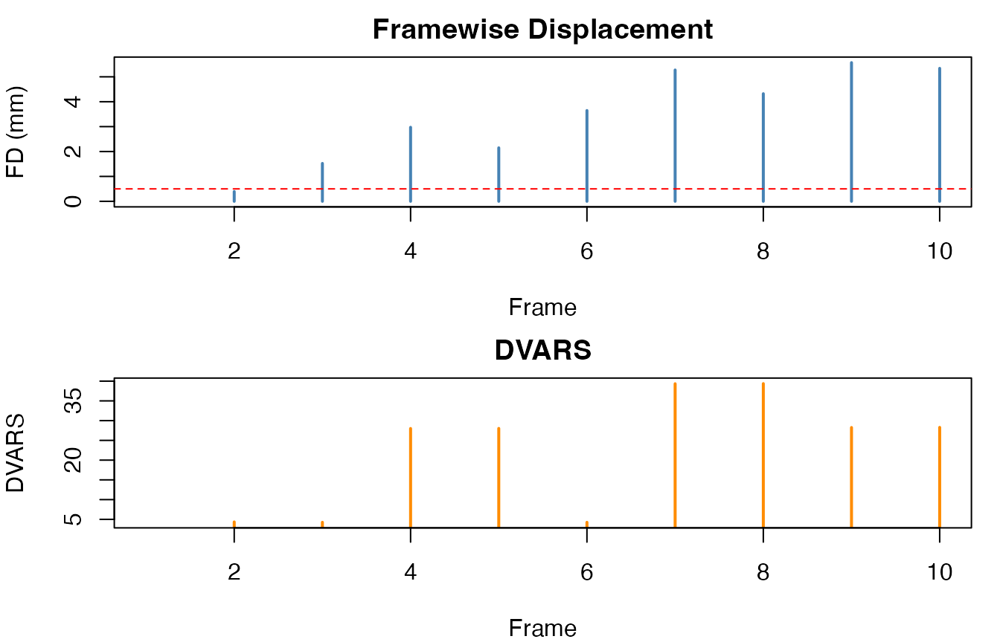
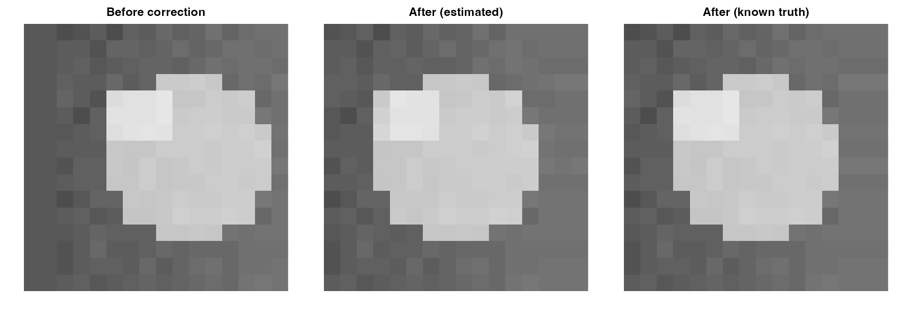

Head motion is the single largest source of artifact in fMRI. Even sub-millimeter shifts between volumes can introduce spurious correlations and wash out real signal. volregger performs rigid-body volume registration entirely in R, estimating six motion parameters per frame (three translations, three rotations) and resampling the corrected data to a common reference.
Quick start
The fastest path to a corrected run is a single call to
volreg():
set.seed(42)
phantom <- array(rnorm(8 * 8 * 4 * 5), dim = c(8, 8, 4, 5))
fit <- volreg(phantom)
fit
#> <volregger_fit>
#> frames: 5
#> corrected: TRUEThat’s the whole pipeline — estimate motion, resample, compute quality metrics — in one call. The rest of this vignette walks through each piece in detail.
Creating a test dataset
To see volregger in action you need data with known motion so you can verify the correction. We’ll build a small spherical phantom and inject translations into specific frames.
set.seed(1)
nx <- 16; ny <- 16; nz <- 8; nt <- 10
grid <- expand.grid(
x = seq_len(nx), y = seq_len(ny), z = seq_len(nz)
)
d <- sqrt((grid$x - 8.5)^2 + (grid$y - 8.5)^2 + (grid$z - 4.5)^2)
template <- array(0, dim = c(nx, ny, nz))
template[d <= 5] <- 100
d2 <- sqrt((grid$x - 5.5)^2 + (grid$y - 11)^2 + (grid$z - 3.5)^2)
template[d2 <= 2] <- 140
for (i in seq_len(nx)) {
template[i, , ] <- template[i, , ] + 1.2 * i
}
run <- array(0, dim = c(nx, ny, nz, nt))
for (t in seq_len(nt)) {
run[, , , t] <- template + rnorm(nx * ny * nz, sd = 3)
}Now inject x-direction shifts into three frames so the registration has something to find:
truth_motion <- matrix(0, nrow = nt, ncol = 6)
# Frame 4: +1 voxel shift in x
run[2:nx, , , 4] <- run[1:(nx - 1), , , 4]
run[1, , , 4] <- 0
truth_motion[4, 1] <- -1
# Frame 7: +2 voxel shift in x
run[3:nx, , , 7] <- run[1:(nx - 2), , , 7]
run[1:2, , , 7] <- 0
truth_motion[7, 1] <- -2
# Frame 9: +1 voxel shift in x
run[2:nx, , , 9] <- run[1:(nx - 1), , , 9]
run[1, , , 9] <- 0
truth_motion[9, 1] <- -1
Middle axial slice. Left: unperturbed template. Right: frame 7 after a 2-voxel shift.
Running motion correction
Pass the 4D array to volreg(). By default it uses the
robust rigid-body engine, picks the middle frame as reference, resamples
with B-spline interpolation, and computes QC metrics:
fit <- volreg(run)The result is a volregger_fit object containing the
corrected data, motion parameters, the alignment template, a brain mask,
and QC metrics.
fit
#> <volregger_fit>
#> frames: 10
#> corrected: TRUEInspecting the results
summary() gives a quick snapshot of motion severity:
summary(fit)
#> $n_frames
#> [1] 10
#>
#> $motion_abs_max
#> [1] 1.99217477 0.01011542 0.25343865 0.04433358 0.05297293 0.02009146
#>
#> $fd_mean
#> [1] 3.118954The estimated motion traces live in coef() — an 10 x 6
matrix of (tx, ty, tz, rx, ry, rz):
head(coef(fit))
#> [,1] [,2] [,3] [,4] [,5]
#> [1,] -0.0068260237 -0.003118970 -0.04584480 0.0005423843 -7.505523e-05
#> [2,] -0.0067182308 -0.004515039 -0.05065323 0.0006925243 -3.827992e-04
#> [3,] -0.0009718751 0.006472289 -0.04568307 0.0013986198 -1.730939e-04
#> [4,] -1.0153766565 0.004575504 -0.11979852 -0.0072116604 -3.286752e-03
#> [5,] 0.0000000000 0.000000000 0.00000000 0.0000000000 0.000000e+00
#> [6,] -0.0160829833 -0.006768421 -0.09365810 0.0443335842 -1.936123e-02
#> [,6]
#> [1,] -0.020091455
#> [2,] -0.012825153
#> [3,] 0.016260824
#> [4,] -0.009674957
#> [5,] 0.000000000
#> [6,] -0.006903121For a tidy data frame that includes QC columns alongside the
parameters, use as.data.frame():
head(as.data.frame(fit))
#> frame tx ty tz rx ry
#> 1 1 -0.0068260237 -0.003118970 -0.04584480 0.0005423843 -7.505523e-05
#> 2 2 -0.0067182308 -0.004515039 -0.05065323 0.0006925243 -3.827992e-04
#> 3 3 -0.0009718751 0.006472289 -0.04568307 0.0013986198 -1.730939e-04
#> 4 4 -1.0153766565 0.004575504 -0.11979852 -0.0072116604 -3.286752e-03
#> 5 5 0.0000000000 0.000000000 0.00000000 0.0000000000 0.000000e+00
#> 6 6 -0.0160829833 -0.006768421 -0.09365810 0.0443335842 -1.936123e-02
#> rz fd dvars
#> 1 -0.020091455 0.0000000 NA
#> 2 -0.012825153 0.3925216 4.205948
#> 3 0.016260824 1.5217928 4.599601
#> 4 -0.009674957 2.9734030 4.663753
#> 5 0.000000000 2.1484191 5.143870
#> 6 -0.006903121 3.6464062 5.907991Visualizing motion
The built-in plot() method shows motion traces and
framewise displacement in a single figure:
plot(fit)
Top: six rigid-body parameters over time. Bottom: framewise displacement. Spikes at frames 4, 7, and 9 correspond to the injected shifts.
Notice the spikes in both panels at the frames where we injected motion. The largest tx displacement should occur near frame 7, where we introduced the largest shift.
Quality control metrics
Two standard QC measures are available as standalone functions. These are useful when you already have motion estimates or want to compare pipelines.
Framewise displacement (FD) summarizes volume-to-volume head movement in a single number per frame:
fd <- framewise_disp(coef(fit))
fd
#> [1] 0.0000000 0.3925216 1.5217928 2.9734030 2.1484191 3.6464062 5.2745756
#> [8] 4.3215793 5.5703676 5.3404745DVARS measures how much image intensity changes between consecutive volumes — it captures both motion and signal artifacts:
dv <- dvars(run)
dv
#> [1] NA 4.349197 4.259554 28.009492 28.031989 4.249698 39.342530
#> [8] 39.372444 28.260277 28.293741
FD and DVARS traces. Both spike at the frames with injected motion.
The dashed red line at FD = 0.5 mm is a common exclusion threshold. Frames above it are candidates for scrubbing or censoring in downstream analyses.
Comparing before and after
The corrected volumes live in fit$corrected. Here we
compare the shifted frame 7 before and after correction. For this
synthetic dataset we also compute a truth-aligned correction using the
known injected shifts, so the visual target is explicit:

Frame 7 before (left), estimated correction from volreg() (middle), and correction from known synthetic motion (right).
The right panel is the expected target for this synthetic setup.
Success example 1: minimal known-shift recovery
The following tiny fixture mirrors the package unit tests: one frame is shifted by exactly one voxel in x, and the estimator should recover that structure as a compensating motion pattern around the middle reference.
x0 <- array(0, dim = c(9, 9, 5))
x0[5, 5, 3] <- 5
x0[4, 5, 3] <- 2
x0[6, 5, 3] <- 1
x_small <- array(0, dim = c(9, 9, 5, 3))
x_small[, , , 1] <- x0
x_small[, , , 2] <- x0
x_small[, , , 3] <- x0
x_small[2:9, , , 2] <- x0[1:8, , ]
est_small <- estimate_motion(
x_small,
control = modifyList(volreg_control(), list(max_iter = 8L, n_samples = 2000L))
)
round(data.frame(frame = 1:3, est_tx = est_small$par[, 1]), 3)
#> frame est_tx
#> 1 1 0.991
#> 2 2 -0.002
#> 3 3 0.991A direct image-space check shows that the shifted frame is pulled much closer to the template after applying the estimated motion:
x_small_corr <- apply_motion(x_small, est_small$par, interp = "linear")
data.frame(
frame = 1:3,
mse_before = sapply(1:3, function(fr) mean((x_small[, , , fr] - x0)^2)),
mse_after = sapply(1:3, function(fr) mean((x_small_corr[, , , fr] - x0)^2))
)
#> frame mse_before mse_after
#> 1 1 0.00000000 0.07280772
#> 2 2 0.07407407 0.07372087
#> 3 3 0.00000000 0.07280772Success example 2: tuned controls on harder synthetic motion
For a tougher mixed translation/rotation trajectory, tuned robust controls and IC stencil mode can dramatically improve pose recovery relative to a deliberately weak baseline:
set.seed(2)
nx_h <- 12; ny_h <- 12; nz_h <- 6; nt_h <- 8
grid_h <- expand.grid(x = seq_len(nx_h), y = seq_len(ny_h), z = seq_len(nz_h))
d_h <- sqrt((grid_h$x - 6.5)^2 + (grid_h$y - 6.5)^2 + (grid_h$z - 3.5)^2)
template_h <- array(0, dim = c(nx_h, ny_h, nz_h))
template_h[d_h <= 3.6] <- 100
template_h[4:5, 8:9, 3] <- 130
base_h <- array(rep(as.numeric(template_h), nt_h), dim = c(nx_h, ny_h, nz_h, nt_h))
base_h <- base_h + array(rnorm(length(base_h), sd = 1.2), dim = dim(base_h))
tt_h <- seq(0, 1, length.out = nt_h)
truth_h <- cbind(
1.0 * sin(2 * pi * tt_h),
0.5 * cos(2 * pi * tt_h),
0.2 * sin(4 * pi * tt_h),
(1.8 * pi / 180) * sin(2 * pi * tt_h),
(1.2 * pi / 180) * cos(2 * pi * tt_h),
(1.5 * pi / 180) * sin(3 * pi * tt_h)
)
truth_h <- sweep(truth_h, 2, truth_h[1, ], FUN = "-")
run_h <- apply_motion(base_h, truth_h, interp = "linear")
ctl_fast <- modifyList(
volreg_control(),
list(
max_iter = 6L,
n_samples = 1200L,
n_restarts = 1L,
use_ic_stencil = FALSE,
capture_boost = FALSE,
robust_template = FALSE,
template_refresh = FALSE
)
)
ctl_tuned <- modifyList(
volreg_control(),
list(
max_iter = 8L,
n_samples = 1500L,
n_restarts = 2L,
use_ic_stencil = TRUE,
stencil_n = 1200L,
whiten_modes = TRUE,
capture_boost = TRUE,
capture_trans_mm = 10,
capture_rot_deg = 10,
capture_topk = 8L,
robust_template = TRUE,
template_refresh = TRUE
)
)
est_fast <- estimate_motion(run_h, ref = "index", ref_index = 1, control = ctl_fast)
est_tuned <- estimate_motion(run_h, ref = "index", ref_index = 1, control = ctl_tuned)
pose_rmse <- function(par, truth) sqrt(mean((par + truth)^2))
data.frame(
model = c("fast baseline", "tuned robust"),
pose_rmse = c(
pose_rmse(est_fast$par, truth_h),
pose_rmse(est_tuned$par, truth_h)
),
fail_rate = c(
mean(est_fast$flags != 0),
mean(est_tuned$flags != 0)
)
)
#> model pose_rmse fail_rate
#> 1 fast baseline 0.1675525 0.875
#> 2 tuned robust 0.1874497 0.125Step-by-step workflow
If you need more control — for instance, to inspect motion estimates before deciding how to resample — you can split the pipeline into separate steps.
Estimate motion parameters without resampling:
est <- estimate_motion(run)
str(est[c("par", "cost_init", "cost_final")])
#> List of 3
#> $ par : num [1:10, 1:6] -0.006826 -0.006718 -0.000972 -1.015377 0 ...
#> $ cost_init : num [1:10] 21.7 21.5 21.6 35.2 21.3 ...
#> $ cost_final: num [1:10] 22.4 22.5 23 22.7 21.3 ...Then apply the estimated parameters with your choice of interpolation:
corrected <- apply_motion(run, est$par, interp = "lanczos")
dim(corrected)
#> [1] 16 16 8 10This two-step pattern is useful when you want to compare interpolation methods or apply the same motion estimates to multiple runs.
Tuning the correction
volreg_control() returns the default settings. Override
any element to customize the optimization:
str(volreg_control())
#> List of 32
#> $ downsample : int [1:3] 4 2 1
#> $ max_iter : int [1:3] 40 30 20
#> $ n_samples : int [1:3] 12000 24000 40000
#> $ huber_k : num 1.5
#> $ lambda0 : num 0.01
#> $ tol_step : num 1e-05
#> $ tol_cost : num 1e-06
#> $ n_restarts : int 0
#> $ robust_template : logi TRUE
#> $ use_overlap_taper : logi TRUE
#> $ capture_boost : logi TRUE
#> $ capture_trans_mm : num 8
#> $ capture_rot_deg : num 8
#> $ capture_topk : int 6
#> $ use_ic_stencil : logi FALSE
#> $ stencil_n : int 4000
#> $ stencil_bx : int 4
#> $ stencil_by : int 4
#> $ stencil_bz : int 2
#> $ stencil_gamma : num 0.5
#> $ whiten_modes : logi FALSE
#> $ whiten_reg : num 1e-06
#> $ use_nuisance_marginalization: logi FALSE
#> $ nuisance_include_template : logi FALSE
#> $ nuisance_orthogonalize : logi TRUE
#> $ nuisance_ridge : num 1e-04
#> $ nuisance_orth_reg : num 1e-06
#> $ use_slice_spline : logi FALSE
#> $ nthreads : int 1
#> $ tr : num 1
#> $ engine : chr "rigid_robust"
#> $ verbose : logi FALSEKey parameters:
-
downsample— Coarse-to-fine pyramid levels (defaultc(4, 2, 1)) -
max_iter— Maximum iterations at each level -
huber_k— Huber loss threshold for outlier robustness -
nthreads— Number of threads for resampling
For runs with severe motion, increasing max_iter or
adding restarts can improve convergence:
fit_strict <- volreg(
run,
control = modifyList(
volreg_control(),
list(max_iter = c(60L, 40L, 30L), n_restarts = 2L)
)
)Choosing an engine
volregger offers two registration engines:
-
rigid_robust(default) — Standard rigid-body alignment with Huber-weighted cost. Fast and appropriate for most data. -
rigid_spline— Fits a temporal spline through the pose parameters, enabling slice-level timing correction. Use this when you have interleaved or multiband acquisitions and want sub-TR motion estimates.
Next steps
-
repair_spin_history()corrects intensity artifacts caused by through-plane motion during interleaved acquisitions - Pass
slice_timesandmb_groupstovolreg()for acquisition-aware correction in multiband sequences - See
?volreg,?estimate_motion, and?volreg_controlfor full parameter documentation